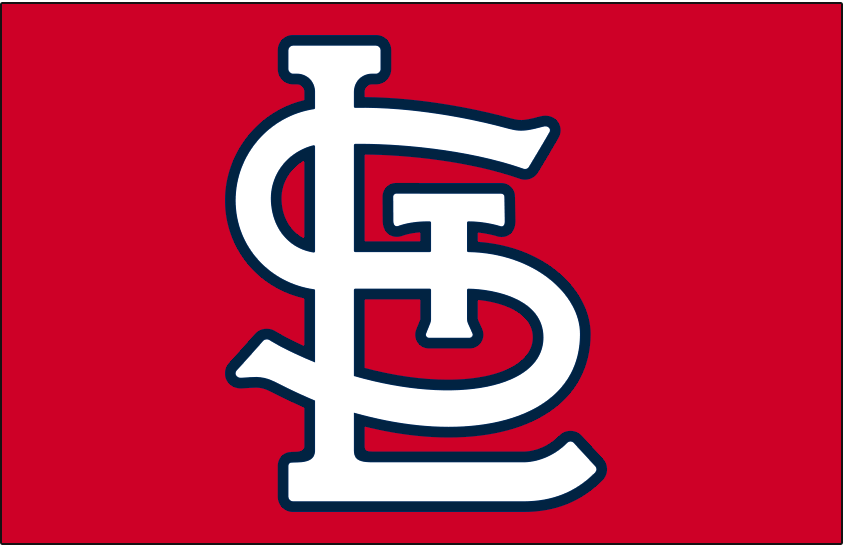
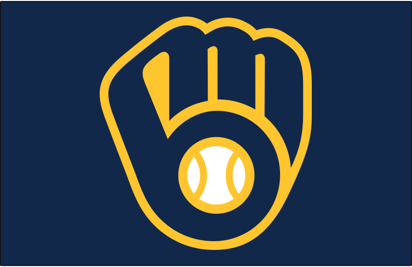
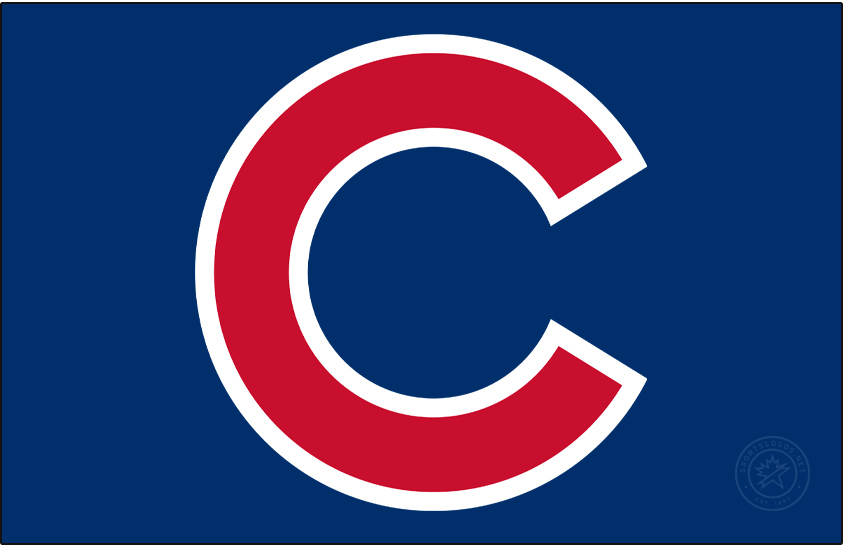
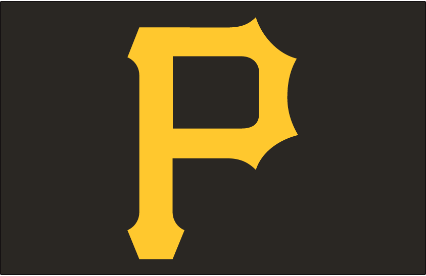
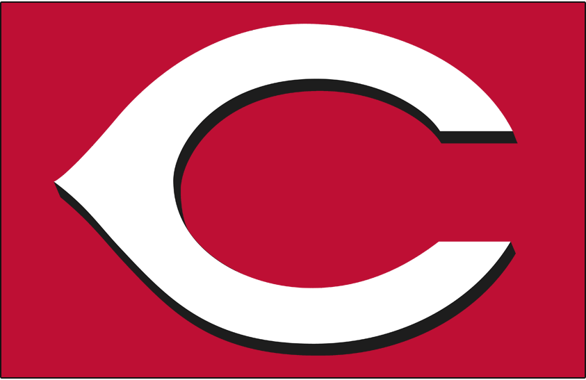

The NL Central has only been around since 1994. It started out with the Chicago Cubs, Cincinnati Reds, Houston Astros, St. Louis Cardinals, and Pittsburgh Pirates. The Milwaukee Brewers joined the division in 1998. The Houston Astros moved to the AL West in 2013.
The Cardinals have had the most success in the division, winning 12 NL Central titles and two World Series championships (two as division winners, one as a wild card). The Cubs have had the second-most success in the division, winning 6 division titles. They won their first World Series in 108 years in 2016. The Brewers, Reds, and Pirates have not had much success in the division. In fact, the Pirates have never won an NL Central title.
The Brewers have had the most success out of them, the Reds, and the Pirates. They made the National League Championship Series in 2018, while the Pirates have never done it during their time in the NL Central. The Reds made the NLCS once during their time in the NL Central. That was in 1995, the first year of the division's existence. The Pirates eliminated the Reds in the 2013 National League Wild Card Game and lost to the Cardinals in the National League Division Series in 5 games. That was the only time they qualified for the NLDS during their time in the NL Central.
2022 division standings:
| Place | Team | Record | Postseason |
|---|---|---|---|
| 1 | St. Louis | 93-69 | Lost NLWCS (Philadelphia) |
| 2 | Milwaukee | 86-76 | Did not qualify |
| 3 | Chicago | 74-88 | Did not qualify |
| 4 | Pittsburgh | 62-100 (H2H over Cincinnati) | Did not qualify |
| 5 | Cincinnati | 62-100 | Did not qualify |